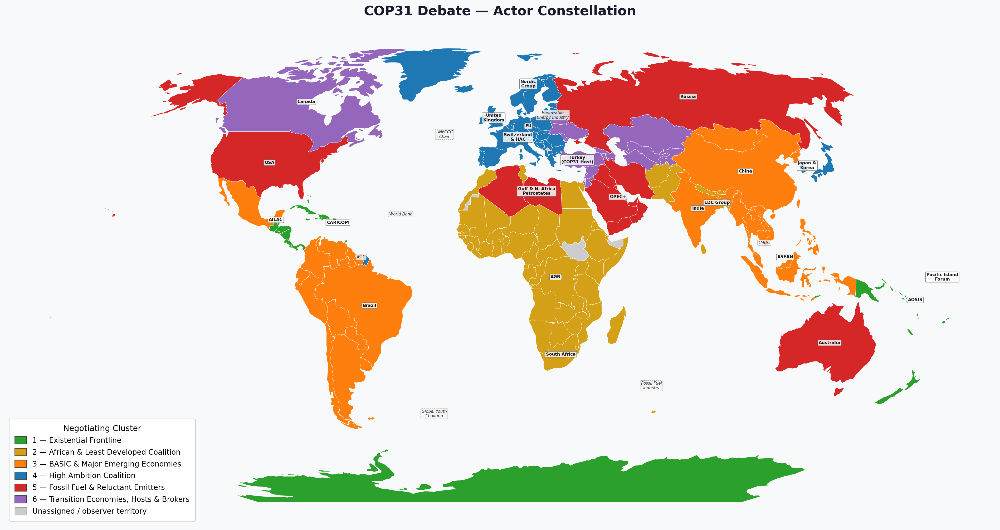

Actor Constellation#
There are 30 actor groups organised into six negotiating blocs.
{kind=link}

Fig. 3 Geographic distribution of the six negotiating blocs across the JUSTICE 57 world regions.#
All six clusters cast **one vote** on the final agreement. A majority of **four votes** is required to adopt the text. The **UNFCCC Chair** (Cluster 6) moderates the plenary and calls the votes.
---
## Bloc 1 — Existential Frontline
**State / regional delegations:** AOSIS, Pacific Island Forum, CARICOM
**Non-state / institutional:** Global Youth & Future Generations Coalition, Indigenous Peoples & Local Communities (IPLC)
Small island and Caribbean states for whom climate change is an existential, near-term threat. Joined by global civil society actors — youth and Indigenous Peoples — who push the most radical ambition and challenge the legitimacy of market-based solutions.
*Bloc host (note-keeper): AOSIS representative*
---
## Bloc 2 — African & Least Developed Coalition
**State / regional delegations:** African Group of Negotiators (AGN), LDC Group, South Africa, Like-Minded Developing Countries (LMDC)
**Non-state / institutional:** World Bank & International Climate Finance Coalition
The African Group and LDC Group share a need for binding mitigation language and generous adaptation finance, but are undercut internally: the LMDC resist binding commitments, and the World Bank's finance comes as loans rather than grants.
*Bloc host (note-keeper): AGN representative*
---
## Bloc 3 — BASIC & Major Emerging Economies
**State / regional delegations:** China, India, Brazil, ASEAN Bloc, Mexico & Central America (AILAC)
**Non-state / institutional:** —
The bloc with the largest share of current and future emissions. China and India defend coal-dependent growth paths; Brazil's deforestation complicates its climate rhetoric; ASEAN is split between coal exporters and climate-exposed archipelagos; AILAC (Mexico and Central America) pushes for higher ambition.
*Bloc host (note-keeper): China representative*
---
## Bloc 4 — High Ambition Coalition
**State / regional delegations:** European Union, United Kingdom, Nordic Group, Japan & South Korea
**Non-state / institutional:** Renewable Energy Industry Alliance
Developed states with high climate ambition, but internally divided: Eastern EU member states push back on rapid phase-out timelines; Norway sits inside the Nordic Group despite being a major oil producer; the Renewable Energy Industry has commercial interests in green finance that do not always align with equity goals.
*Bloc host (note-keeper): EU representative*
---
## Bloc 5 — Fossil Fuel & Reluctant Emitters
**State / regional delegations:** United States, Russian Federation, OPEC+ Bloc, Australia
**Non-state / institutional:** International Fossil Fuel Industry
The bloc most likely to block or dilute the agreement. The USA is constrained by domestic political divisions; Russia weaponises fossil fuel supply; OPEC+ and Australia seek to extend fossil fuel revenues; the International Fossil Fuel Industry advocates for CCS as a delay tactic.
*Bloc host (note-keeper): USA representative*
---
## Bloc 6 — Transition Economies, Hosts & Brokers
**State / regional delegations:** Turkey (COP31 Host), Canada, Gulf & North Africa Petrostate Alliance, Switzerland & HAC
**Non-state / institutional:** UNFCCC Chair
Actors united by an interest in managed transition and procedural legitimacy, but with divergent fossil fuel dependencies. Turkey (host) must appear neutral; Canada and the Gulf & North Africa Alliance seek a negotiated phase-down; Switzerland & HAC push market mechanisms; the **UNFCCC Chair** moderates and abstains from voting.
*Bloc host (note-keeper): Turkey representative (COP31 Host)*
---
## Summary table
| Bloc | Name | State actors | Non-state actors | Vote |
|------|------|-------------|------------------|------|
| 1 | Existential Frontline | AOSIS, Pacific Island Forum, CARICOM | Global Youth Coalition, IPLC | 1 |
| 2 | African & LDC | AGN, LDC Group, South Africa, LMDC | World Bank & Climate Finance Coalition | 1 |
| 3 | BASIC & Major Emerging | China, India, Brazil, ASEAN, AILAC | — | 1 |
| 4 | High Ambition Coalition | EU, UK, Nordic Group, Japan & South Korea | Renewable Energy Industry Alliance | 1 |
| 5 | Fossil Fuel & Reluctant | USA, Russia, OPEC+, Australia | International Fossil Fuel Industry | 1 |
| 6 | Transition & Brokers | Turkey, Canada, Gulf & N. Africa, Switzerland & HAC | UNFCCC Chair | 1 |
```{note}
The mandate given to your group is **secret**. You cannot show it to other groups. You can be
open about your intentions, but you cannot prove your honesty by revealing your mandate.
Full actor list#
Each student group self-assigns one actor. The Group # column is filled in during the first lecture.
# |
Actor |
Bloc |
Group # |
|---|---|---|---|
1 |
AOSIS (Alliance of Small Island States) |
1 — Existential Frontline |
|
2 |
Pacific Island Forum |
1 — Existential Frontline |
|
3 |
CARICOM (Caribbean Community) |
1 — Existential Frontline |
|
4 |
Global Youth & Future Generations Coalition |
1 — Existential Frontline |
|
5 |
Indigenous Peoples & Local Communities (IPLC) |
1 — Existential Frontline |
|
6 |
African Group of Negotiators (AGN) |
2 — African & LDC |
|
7 |
LDC Group (Least Developed Countries) |
2 — African & LDC |
|
8 |
South Africa |
2 — African & LDC |
|
9 |
Like-Minded Developing Countries (LMDC) |
2 — African & LDC |
|
10 |
World Bank & International Climate Finance Coalition |
2 — African & LDC |
|
11 |
China |
3 — BASIC & Major Emerging |
|
12 |
India |
3 — BASIC & Major Emerging |
|
13 |
Brazil |
3 — BASIC & Major Emerging |
|
14 |
ASEAN Bloc |
3 — BASIC & Major Emerging |
|
15 |
Mexico & Central America (AILAC) |
3 — BASIC & Major Emerging |
|
16 |
European Union |
4 — High Ambition Coalition |
|
17 |
United Kingdom |
4 — High Ambition Coalition |
|
18 |
Nordic Group |
4 — High Ambition Coalition |
|
19 |
Japan & South Korea |
4 — High Ambition Coalition |
|
20 |
Renewable Energy Industry Alliance |
4 — High Ambition Coalition |
|
21 |
United States |
5 — Fossil Fuel & Reluctant |
|
22 |
Russian Federation |
5 — Fossil Fuel & Reluctant |
|
23 |
OPEC+ Bloc |
5 — Fossil Fuel & Reluctant |
|
24 |
Australia |
5 — Fossil Fuel & Reluctant |
|
25 |
International Fossil Fuel Industry |
5 — Fossil Fuel & Reluctant |
|
26 |
Turkey (COP31 Host) |
6 — Transition & Brokers |
|
27 |
Canada |
6 — Transition & Brokers |
|
28 |
Gulf & North Africa Petrostate Alliance |
6 — Transition & Brokers |
|
29 |
Switzerland & HAC |
6 — Transition & Brokers |
|
30 |
UNFCCC Chair |
6 — Transition & Brokers |